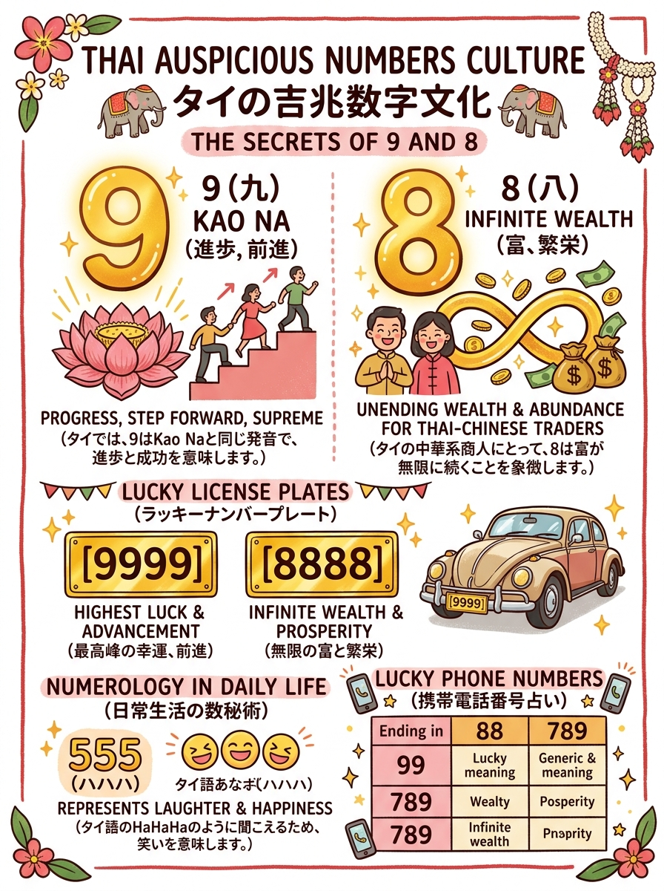
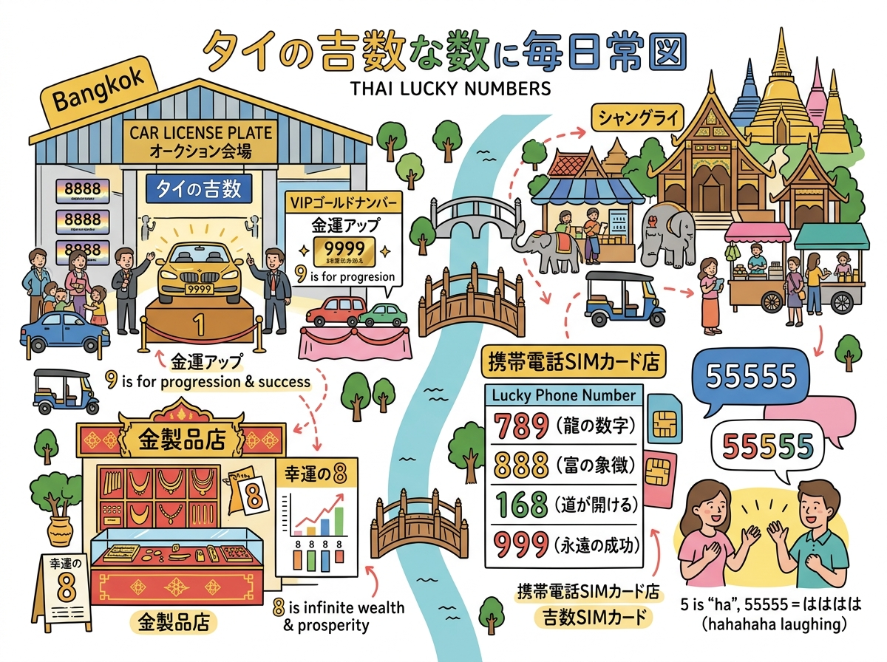

01
0
天王星（死神）。「สูญเสีย（失う）」と同音で財産や運気の喪失・急変を連想させ、電話番号や車ナンバーの末尾・連続は一般に強く敬遠される（IT・革新分野除く）。
「9（前進・カオナ）」が好まれ「6」が避けられる理由など、車ナンバーや電話番号の吉凶。
クリックすると拡大して詳細を確認・印刷できます。

旅行者の持ち歩き・印刷に適した手書き風インフォグラフィック。

位置関係やルート、全体像を俯瞰できるワイドデザイン。
現地調査および公的データに基づく最新詳細情報。
天王星（死神）。「สูญเสีย（失う）」と同音で財産や運気の喪失・急変を連想させ、電話番号や車ナンバーの末尾・連続は一般に強く敬遠される（IT・革新分野除く）。
太陽神。「ยศศักดิ์（栄誉・地位）」を象徴。リーダーシップ、権威、自信。経営者や官僚・公務員に好まれる。端と端に置く「1xx1」は棺桶の担ぎ棒に見えるとして避ける俗信あり。
月神。「เมตตามหานิยม（慈愛・愛嬌）」を象徴。優しさ、柔軟性、良縁、ペア。接客業、サービス業、芸能、美容関係者に大人気の吉数。
火星神。「กล้าแข็งขยัน（剛毅・勤勉）」を象徴。軍人、警察官、アスリート、外科医には強力な推進力。一般乗用車では衝突・事故・手術・短気を連想し敬遠されやすい。
水星神。「วาทศิลป์（商談・知性）」を象徴。セールス、商業、広報、メディアで人脈と利益をもたらす吉数。タイ伝統数秘術では純粋な吉祥数とされる。
木星神。タイ占星術の「最高の大吉星（ศุภเคราะห์）」。大師・指導者（ครูบา）、学問、良識、安定。チャットの笑い声「555」＝幸福。最も安全で尊い絶対的大吉数。
金星神。「กิเลสสมบัติ（財宝・芸術・魅力）」を象徴。金運・投資運に大人気。語音「หกล้ม（転ぶ）」を避けるため「36」「56」「68」などの吉ペアで好まれる。
土星神。「โทษทุกข์（苦難・遅延・重責）」を象徴し、一般に最も忌避される数。長期的な忍耐と大地を扱う不動産業・建設業・農業のみ適合とされる。
ラーフ神・中華「八＝發（発財・繁栄）」・無限大（∞）。リスクを取る投資家や大企業経営者に大人気。陸運局オークションで「8888」は数千万バーツで落札される。
ケートゥ神。「神聖（สิ่งศักดิ์สิทธิ์）・長寿」を象徴。前進の語呂合わせ、名君ラーマ9世への崇敬、神仏加護が重なるタイ社会不動の最高吉祥数。「9999」は史上最高額を記録。